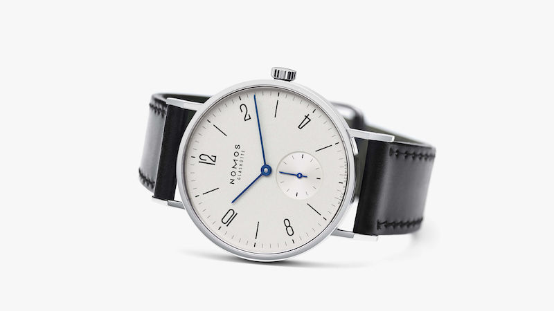
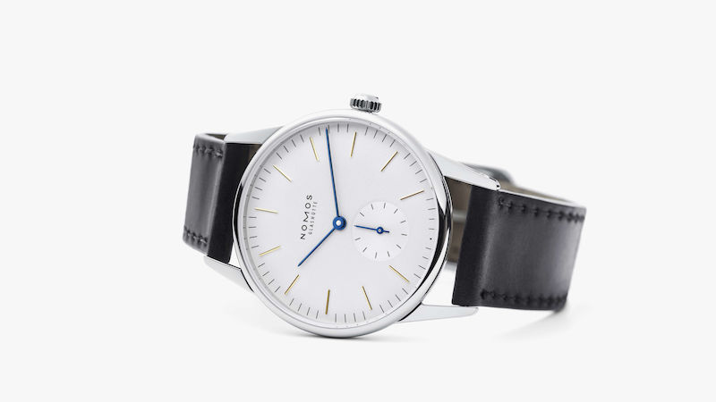
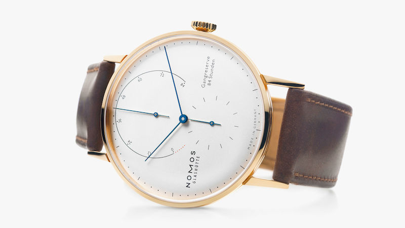
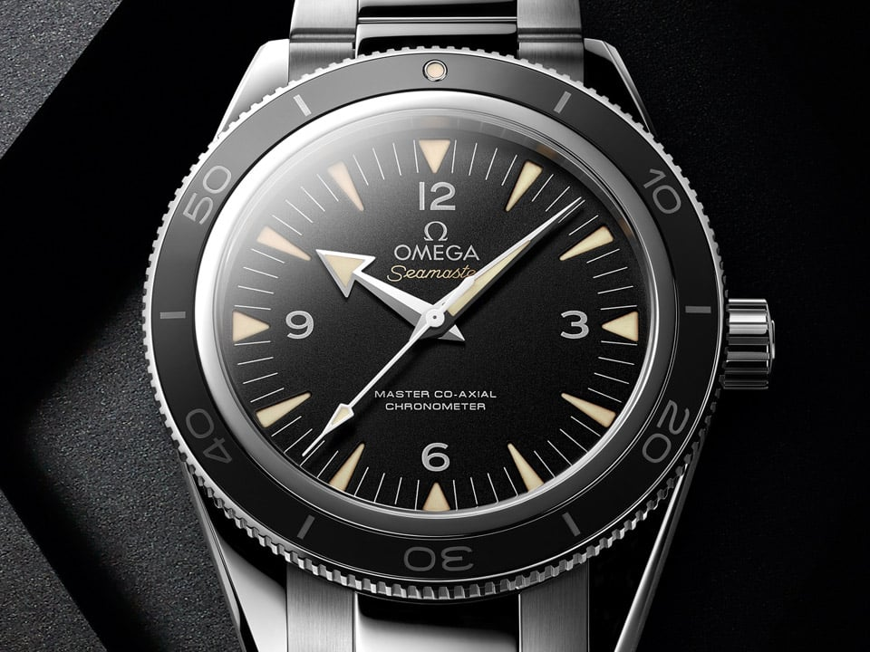
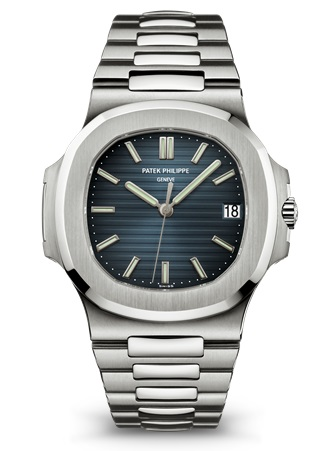
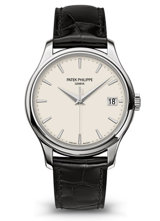

-
- Tangente

Trend-setting, straightforward-the epitome of a NOMOS watch
Orion

Simply beautiful-because less is so much more
Lambda

The highest level of craftsmanship from the NOMOS Atelier
-
- Seamaster 300

More than 50 years after its introduction, the Seamaster 300
reappears in an enhanced form that makes use of OMEGA’s most innovative
technology, including a Master Co-Axial calibre.
Aqua terra 150m

Clean, simple and balanced. Discover the impressive redesign of
the latest Seamaster Aqua Terra Gents' Collection.
All models have undergone a stylish makeover and as Master Chronometers,
they're absolutely irresistible.
-
- Nautilus

Sporting elegance
Calatrava

Legendary purity